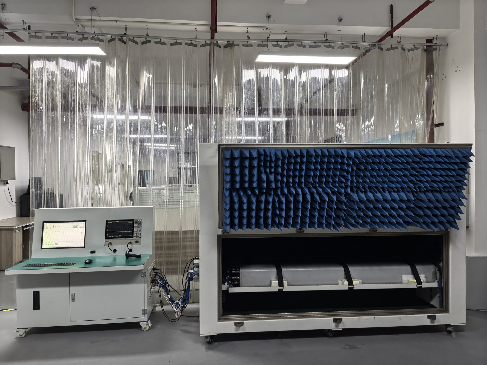

ANTestify TTC3000 antenna test systems
Two forms of the same test technology: an integrated station for factories, warehouses and repair centres, and a vehicle-mounted platform for testing in the field.
TTC3000 Base Station Antenna Integrated Testing System
- All-in-one and compact. Radiation, circuit, PIM and RET interface testing in one system with a footprint under 10 m². No dedicated indoor anechoic room is required.
- Production-line speed. All electrical parameters of an antenna tested at one station: a 4+4 antenna in about 20 minutes, 10–50 times the efficiency of conventional methods.
- Automated end to end. Scan the barcode and the system identifies the antenna model, loads the test script, switches ports, sets the electrical downtilt and produces the report.
- Easy operation. No alignment to the antenna phase centre and no manual port changes.
- Low cost to build and run. Typically 10–30% of the price of conventional systems. Works at room temperature, and users can maintain and calibrate the system themselves.
- Full traceability. Test reports are uploaded automatically, keeping data for the whole product life cycle.

Models
| Model | RET interface | Circuit parameters | PIM | Radiation parameters | Frequency range | Typical use |
|---|---|---|---|---|---|---|
| TTC3000-B4G / B8G | ● | ● | 600 MHz–4 GHz / 8 GHz | Production testing, outgoing inspection | ||
| TTC3000-H4G / H8G | ● | ● | ● | 600 MHz–4 GHz / 8 GHz | Production testing, outgoing inspection | |
| TTC3000-R4G / R8G | ● | ● | ● | ● | 600 MHz–4 GHz / 8 GHz | Full testing, performance verification |
Key specifications
Movable RF anechoic chamber
- Frequency range
- 100 MHz–8 GHz
- Shielding
- ≥ 90 dB
- Reflectivity
- ≤ −30 dB
Probe scanner
- Travel
- 0–3000 mm
- Positioning accuracy
- ±0.05 mm
- Speed
- ≥ 100 mm/s
AUT rotator
- Rotation range
- −180° to +180°
- Positioning accuracy
- ±0.05°
- Speed
- ≥ 5°/s
Near-field to far-field
- Agreement with theoretical data
- ≥ 97%
Test time
- 4+4 antenna
- ≈ 20 min
- 4+4+8+8 antenna
- ≈ 40 min
- 24-port, full near-field
- < 10 h
System
- Footprint
- < 10 m²
- PIM analyzers
- Up to 8
- Operating temperature
- 25 ± 5 °C
The 20- and 40-minute times cover the complete automatic test sequence: RET, circuit parameters and main-lobe radiation parameters. A full near-field pattern measurement of every port takes longer, as shown for the 24-port antenna.

Supported antenna types
- Multi-band smart antennas with independent RET, such as 2+2+8+8 and 4+4+8+8 configurations
- Conventional, high-downtilt and high-gain dual-band smart antennas
- 8-channel RET antennas
- Multi-port FDD and NB-IoT RET antennas, such as 4+4 dual-band and 4-channel single-band
New antenna models are added as test scripts. Tell us which antennas you need to test.

Vehicle-Mounted Base Station Antenna Testing Platform
- Complete test coverage. Circuit parameters such as VSWR, isolation, PIM, coupling and electrical downtilt, plus rapid measurement of radiation parameters such as gain and beamwidth.
- Mobile and flexible. The RF anechoic chamber is built with refrigerated-truck body techniques for thermal insulation and sun protection. It suits pre-installation testing and rapid network restoration after disasters.
- Five-stage vibration isolation. Air suspension on the chassis plus vibration-damped mounting of the scanner, console and instruments allow travel on rural roads.
- Self-contained. The field model carries its own power and air conditioning and works independently for 10 hours or more.
Models
| Model | Application | Power | Vehicle | Typical use |
|---|---|---|---|---|
| TTC3000-C4G / C8G | Urban | External power | Light truck or van | Arrival and pre-installation testing |
| TTC3000-U4G / U8G | Suburban | On-board power | Medium truck or bus | On-site testing and inspection |
| TTC3000-W4G / W8G | Field | On-board power and air conditioning | Heavy truck or coach | Field work, rapid restoration after disasters |
The gain measurement capability of the vehicle-mounted platform was assessed in a CTTL measurement audit. Read about the validation.
More than the hardware
Installation and calibration
We install and calibrate the system on site and hand it over ready for daily testing.
Training
Operator training on test procedures, test-script management and routine maintenance.
Software and data
Pattern display and comparison, Word and Excel reports with more than 20 pattern parameters per port and frequency, and life-cycle data storage.
Which configuration fits your line?
Tell us the antenna types, frequency bands and daily volumes, and we will recommend a model.